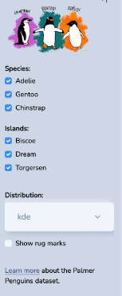
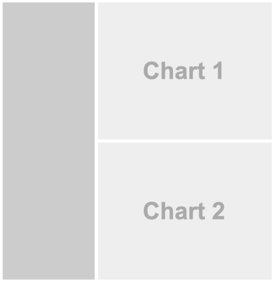
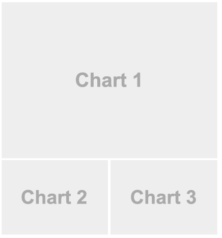
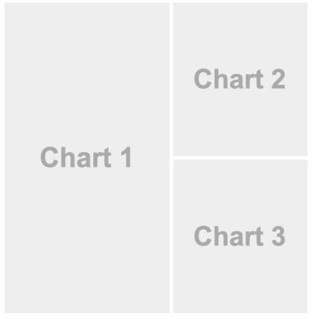
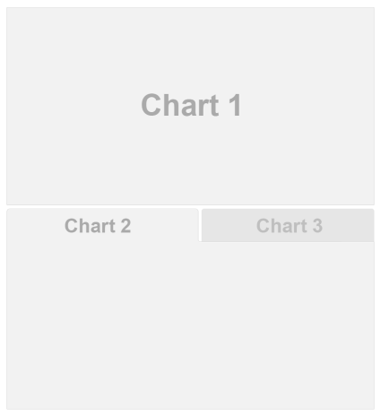
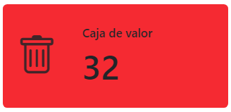

```{r}
#| echo: fenced
1 + 1
```Documentos de Quarto
Introducción
Quarto ofrece un marco de creación unificado para la ciencia de datos, que combina código, resultados del código y escritura. Es decir, combina un lenguaje de programación (R, en nuestro caso pero podríamos usar otros lenguajes como python o julia) con un lenguaje de documentación (markdown + otras utilidades).
Los documentos de Quarto son totalmente reproducibles y admiten docenas de formatos de salida, como archivos HTML, PDF, Word, presentaciones y más.
Los archivos Quarto están diseñados para usarse de tres maneras:
Comunicar resultados y nuestras conclusiones (sin mostrar el código detrás del análisis).
Colaborar con otros científicos de datos que trabajen en el mismo proyecto o estén interesados en nuestro trabajo (aquí seguramente incluimos el código).
Como un entorno en el que hacer ciencia de datos, como un cuaderno de laboratorio moderno donde podemos registrar no solo lo que hicimos, sino también lo que pensamos.
Heredan lo mejor de los 10 años de desarrollo acumulado, dado que los documentos tienen muchas similitudes pero con la ventaja de integrar otras herramientas que surgieron como extensiones de Rmarkdown.
Conceptos básicos
Quarto es un software que se instala independientemente de R y Rstudio. En si mismo funciona con una interfaz de línea de comandos (CLI).
Su sitio web es https://quarto.org/ y el acceso a la descarga ese encuentra en Get Started. Una vez descargado el ejecutable su instalación es sencilla y similar a cualquier aplicación de Windows.
Las últimas versiones de RStudio ya lo tienen integrado, al igual que markdown y Pandoc, por lo que vamos a utilizarlo directamente sin necesidad de aprendernos los comandos nativos de su línea de comandos.
Cabe destacar que Quarto se encuentra en pleno desarrollo y es habitual que se publiquen versiones actualizadas que incluyen avances y nuevas tecnologías. Estas nuevas versiones demoran un tiempo en aparecer incluídas en RStudio, por lo que se sugiere actualizarlo individualmente.
Anatomía de un documento Quarto
Los archivos fuentes de Quarto tienen extensión .qmd y sus partes fundamentales son:

Editor Visual:
RStudio incorporó un editor gráfico de archivos Quarto, similar a un editor de texto como Word. En lugar de código en texto plano con sus marcas, vemos un aspecto más visual con un menú que permite integrar imágenes, tablas, títulos, colores, etc.
Cabecera YAML:
Esta cabecera inicia todo documento Quarto y contiene los metadatos del archivo con las opciones de configuración generales. Es el lugar donde se define que tipo de documento estamos produciendo (html, pdf, etc).
YAML es un lenguaje de marcas ligero del cual utilizaremos algunas opciones.
Encabezados (títulos) y Outline:
Los documentos Quarto contienen un formato jerárquico con cabeceras que permiten dar estructura al contenido. Además, mientras se escribe, genera un índice (outline) a la derecha del script con el cual nos movemos rápidamente por el documento
Texto en markdown
No solo se puede incluir texto plano acompañado de marcas que le dan un formato particular, sino también embeber imágenes, tablas, fragmentos estéticos diferentes, etc.
Fragmentos de código (chunk)
En estas secciones delimitadas se incluye el código que se ejecuta (y también puede ser mostrado) en el documento final. Estos chunk, como se denominan en inglés, pueden ser de diferentes lenguajes (en nuestro caso utilizaremos habitualmente el lenguaje R).
Editor visual de RStudio
El editor visual proporciona una interfaz sencilla para la creación de documentos de Quarto. En el fondo, el texto de los documentos de Quarto (archivos .qmd) se escribe en lenguaje Markdown, un conjunto ligero de marcas para formatear archivos de texto sin formato. De hecho, Quarto utiliza Markdown de Pandoc (una versión ampliada de Markdown que Quarto entiende), incluidas tablas, citas, referencias cruzadas, notas al pie, listas de definiciones, atributos, HTML/TeX sin formato y más, así como compatibilidad con la ejecución de celdas de código y la visualización de su salida en línea. Si bien Markdown está diseñado para ser fácil de leer y escribir, requiere aprender una nueva sintaxis, por lo tanto conviene utilizar las herramientas del modo visual.
Edición en código fuente
El modo source (fuente) sirve para editar el documento en markdown puro con todas sus marcas sin la ayuda del modo visual. Para aquellos acostumbrados a sus sintaxis posibilita escribir directamente con la estructura adecuada y depurar sus errores.
Ahora bien, cuando trabajamos en el editor visual aunque nos muestre los elementos con el formato de salida, en realidad en el documento guarda su contenido en Markdown simple y se puede alternar entre los editores visuales y de source para ver y editar el contenido usando cualquiera de las herramientas.
Fragmentos de código
Para ejecutar código dentro de un documento de Quarto, es necesario insertar un fragmento.
Las tres formas de hacerlo son:
Usar el atajo de teclado
Ctrl+Alt+I.Pulsar el icono del botón “Insert” en la barra de herramientas del editor.
Escribir manualmente los delimitadores de fragmentos ```{r} y ```.
El código que se incluye tiene las misma características que el código de un script común de R. Lo que si hay que tener en cuenta es que la activación de paquetes y la lectura de archivos debe ser explícita dentro del documento, es decir aunque tengamos algún paquete activo en la sesión de trabajo o datos leídos en el entorno de trabajo, si estos no figuran dentro de algún fragmento del documento (por ejemplo, porque se ejecutaron en consola directamente) al momento de renderizar vamos a tener la devolución de un error.
Opciones de fragmentos
Dentro de los fragmentos de código se puede declarar metadatos llamados opciones de ejecución.
El formato sintáctico en Quarto tiene la forma #| y suele encabezar el fragmento.
En el ejemplo anterior echo: fenced es una opción de ejecución que como metadato asociado al código provoca que en el documento renderizado dicho código se muestre junto al resultado incluída la opción de ejecución.
El motor Knitr incluído en RStudio es el que proporciona casi 60 opciones de ejecución que se pueden usar para personalizar los fragmentos de código.
La lista completa de códigos se puede ver en https://yihui.org/knitr/options.
Algunas de las opciones más importantes para controlar bloques son:
eval: falseEvita que se evalúe el código (y, obviamente, si no se ejecuta el código, no se generarán resultados). Esto es útil para mostrar código de ejemplo o para deshabilitar un bloque grande de código sin comentar cada línea.include: falseEjecuta el código, pero no muestra el código ni los resultados en el documento final. Puede servir para tareas internas.echo: falseEvita que el código, pero no los resultados, aparezcan en el archivo final.message: falseowarning: falseEvita que aparezcan mensajes o advertencias en el archivo terminado.results: hideOculta la salida impresa;fig-show: hideOculta los gráficos.error: trueHace que la renderización continúe incluso si el código devuelve un error.
Formatos
Los formatos de salida de Quarto son bien variados y todos se definen dentro del encabezado YAML del documento.
De forma predeterminada la salida es HTML y una cabecera básica sería:
---
title: "Título del documento"
format: html
---En esta misma cabecera se incluyen también las opciones de salida o renderizado, por ejemplo:
---
title: "Título del documento"
format:
html:
toc: true
toc_float: true
---La salida será un archivo html con tabla de contenidos (toc) flotante.
Otros formatos posibles son:
Documentos
pdfcrea un PDF con LaTeX (un sistema de diseño de documentos de código abierto)typstcrea un PDF con typst (un sistema de composición moderno y sencillo de documentos pdf)docxconstruye documentos de Microsoft Word ( .docx).odtconstruye documentos OpenDocument Text ( .odt).rtfconstruye documentos con formato de texto enriquecido ( .rtf).
Presentaciones
revealjsPresentación HTML con RevealJSpptxPresentación de PowerpointbeamerPresentación en PDF con LaTeX Beamer.
Existen numerosas opciones relacionadas al tipo de salida propuesta que se pueden encontrar en cada apartado de la guía oficial de Quarto.
Tableros (dashboard) de Quarto
A partir de la versión 1.4, Quarto incorpora la creación de tableros (dashboard). Con una forma de producción sencilla que tiene varios elementos similares a los utilizados por el paquete flexdashboard de RMarkdown.
Los tableros pueden ser estáticos o interactivos, se les puede incluir una gran variedad de componentes como dispositivos externos provenientes de htmlwidgets y sus diseños suelen ser flexibles y adaptativos (los componentes se redimensionan de forma inteligente para llenar el navegador y se adaptan para su visualización en dispositivos móviles).
Cabecera YAML
La cabecera que define un tablero tiene el formato configurado en dashboard.
---
format: dashboard
---Algunas opciones de ejecución YAML son similares a las conocidas para otros documentos: title, author, theme, toc, otras son particulares de este formato: orientation, scrolling, expandable, nav-buttons, etc.
Cuando el tablero tiene componentes de interactividad debemos indicar en la cabecera el motor Shiny que manejará el código, de la siguiente forma:
---
format: dashboard
server: shiny
---Componentes de un tablero
Los componentes básicos de un tablero son:
Barras laterales, filas y columnas y conjuntos de pestañas:
En estas barras se ubican muchas veces las entradas (inputs) interactivas.
Además se pueden agregar filas y columnas con encabezados markdown (atributos opcionales para controlar la altura, el ancho, etc.) y conjuntos de pestañas para dividir aún más el contenido.

Tarjetas (gráficos, tablas, cajas de valores, contenido):
Las tarjetas (cards) son contenedores para resultados de celdas y texto markdown de formato libre. El contenido de las tarjetas normalmente se asigna a las celdas de su documento fuente.
En estas celdas se suele incluir valores, tablas, gráficos, elementos dinámicos o interactivos. Algunos formatos vienen previamente soportados como las cajas de valores (valuebox)
Diseño
A la combinación de barras y tarjetas con su ubicación y orientación la llamamos diseño del tablero.
El diseño va a estar dado por los distintos componentes que deseemos mostrar. Mientras las páginas se declaran con encabezados 1 (#) los bloques fila o columna se hacen con encabezados 2 (##), a los cuales se le puede agregar definición de ancho con width o alto con height.
Las barras laterales se arman con encabezados 1 (#) con estilo .sidebar y las pestañas con encabezados 2 y estilo .tabset.
Algunos ejemplos:
Barra lateral
---
title: "Mi Tablero"
format: dashboard
---
# Pagina 1
## {.sidebar}
```{r}
```
## Column
```{r}
```
```{r}
```
Filas
---
title: "Mi Tablero"
format: dashboard
---
## Row {height=70%}
```{r}
```
## Row {height=30%}
```{r}
```
```{r}
```
Columnas
---
title: "Mi Tablero"
format: dashboard
---
## Column {width=60%}
```{r}
```
## Column {width=40%}
```{r}
```
```{r}
```
Pestañas
---
title: "Mi Tablero"
format: dashboard
---
## Row
```{r}
```
## Row {.tabset}
```{r}
#| title: Chart 2
```
```{r}
#| title: Chart 3
```
Tarjetas
Las tarjetas son la unidad fundamental de visualización dentro de los tableros.
Pueden encerrar tanto texto markdown como código que produzca alguna salida tipo valor, tabla o gráfico.
::: {.card}
Aquí va el contenido de la tarjeta. Puede ser un markdown directo o la salida de código.
```{r}
```
:::Las cajas de valor son tarjetas especiales que se declaran con el estilo reservado .valuebox.
::: {.valuebox}
Fecha actual
2025-11-30
:::También se pueden declarar con metadatos dentro del bloque de código:
#| content: valuebox
#| title: "Caja de valor"
n <- mtcars |>
tibble::as_tibble() |>
dplyr::count() |>
dplyr::pull(n)
list(
icon = "trash",
color = "red",
value = n
)

Aquí se incluyen también dispositivos con cierta interactividad directa como son los htmlwidgets o si se conoce el lenguaje, código de Observable JS.
La galería de widgets disponibles en la actualidad cuenta con 132 dispositivos que se puede ver en https://gallery.htmlwidgets.org/
Interactividad
Los documentos que tienen elementos interactivos de R utilizan Shiny como servidor. Shiny es una librería para producir aplicaciones interactivas bajo R y recientemente en python.
Anteriormente vimos que la cabecera YAML tiene que tener la opción server: shiny para que este se encuentre activo y pueda utilizarse dentro del tablero.
La estructura de Shiny necesita de dos componentes:
- la interfaz de usuario (ui)
- el servidor Shiny
El funcionamiento interno es tipo cliente/servidor, donde en la interfaz de usuario se ubican los inputs con los que el usuario se vincula y del lado del servidor se responde a los cambios de esas entradas.
Generalmente los inputs van dentro de la barra lateral y el server se declara como contexto en los fragmentos de código. Por ejemplo:
## {.sidebar}
```{r}
selectInput(
"variableChoice",
"Seleccione una variable:",
choices = names(mtcars)
)
```
## Row
```{r}
#| context: server
output$variablePlot <- renderPlot({
yVar <- mtcars[[input$variableChoice]]
plot(mtcars$index, yVar)
})
```
Este código tiene un input de selección en la barra lateral, donde el usuario puede seleccionar una variable del dataset mtcars, y un fragmento de contexto servidor donde renderiza un gráfico de dispersión en base a la variable elegida (input$variableChoice).
Inputs
Las entradas de Shiny son funciones que sirven para crear elementos de interfaz de usuario que solicitan al usuario valores de entrada o interacción.
Algunos de sus inputs básicos son:

Botones, casillas de verificación (sola o múltiples), ingreso de fechas, números y texto, rangos, cajas de selección, barras de desplazamiento, etc son algunos de los muchos dispositivos que vienen ya preparados.
La referencia a esas funciones las podrán encontrar en https://shiny.posit.co/r/reference/shiny/latest/.
Temas
De la misma forma que en los productos Quarto anteriores se pueden definir temas estéticos preconfigurados o personalizar uno propio, mediante la declaración en la cabecera YAML de theme:.
Entre los predeterminados, encontramos 25 posibles (Bootswatch project): lumen, materia, minty, slate son alguno de ellos.
Para personalizar un tema se procede a utilizar archivos css o scss (Sass). Bootstrap define más de 1400 variables Sass que controlan fuentes, colores, relleno, bordes y mucho más. Se pueden ver todas las variables aquí:
https://github.com/twbs/bootstrap/blob/main/scss/_variables.scss
Para personalizar un tema Bootstrap existente con un conjunto propio de variables o reglas, solo definimos el tema base y luego los archivos de tema personalizados:
theme:
- cosmo
- custom.scss
El archivo de personalización Sass custom.scss podría ser:
/*-- scss:defaults --*/
$h2-font-size: 1.6rem !default;
/*-- scss:rules --*/
h1, h2, h3, h4, h5, h6 {
text-shadow: -1px -1px 0 rgba(0, 0, 0, .3);
}Donde en la sección indicada por /*-- scss:defaults --*/ pertenece a las variables ($h2-font-size: tamaño de fuente en encabezado 2) y la sección de reglas (donde van las reglas CSS normales) está indicada por el /*-- scss:rules --*/ (text-shadow: -1px -1px 0 rgba(0, 0, 0, .3); sombreado en encabezados desde 1 al 6).
Naturalmente, también se puede crear un tema totalmente personalizado y proporcionar solo eso (en este caso, se hereda el tema Bootstrap predeterminado):
theme: custom.scssLas variables Sass más comunes estan publicadas en: https://quarto.org/docs/dashboards/theming.html#sass-variables
Mas información sobre temas HTML en https://quarto.org/docs/output-formats/html-themes-more.html
Publicación
Los tableros suelen ser simplemente páginas HTML estáticas, por lo que se pueden implementar en cualquier servidor web.
Estos tableros, a su vez si se combinan con una lectura periódica de la fuente de datos pueden mostrar actualizaciones según vayan variando esos datos. A esto se le llama tablero programado (por ejemplo, a través de una tarea cron).
También se pueden parametrizar, a traves de parameters en la cabecera YAML o bien pasar a ser tableros completamente interactivos con Shiny, donde se requiere un servidor especial para su implementación.
RStudio trae incorporado en su IDE accesos directos de publicación a Posit Connect Cloud mediante el botón  , dado que pertenece a la misma empresa Posit. Sus servicios son los que mejor se adaptan a los requerimientos de usuarios que producen estos documentos pero con planes comerciales.
, dado que pertenece a la misma empresa Posit. Sus servicios son los que mejor se adaptan a los requerimientos de usuarios que producen estos documentos pero con planes comerciales.
Otras opciones de sitios que publican tableros estáticos gratuitamente son:
- Quarto Pub
Es un servicio gratuito de publicación de contenido hecho en Quarto. Además de tableros se puede alojar blogs, sitios web, libros, presentaciones y otros documentos.
Estas publicaciones serán siempre visibles por cualquier usuario de Internet, no pueden tener más de 100 Mb y poseen un ancho de banda de navegación de 10 Gb por mes.
Se puede publicar mediante el comando quarto publish en la Terminal. Deberá tener una cuenta a su nombre que podrá obtener en https://www.quarto.pub. La dirección creada agrega como dominio quarto.pub a su nombre de usuario y luego la dirección al sitio creado (puede tener varios). La administración se realiza desde el propio sitio web.
Más información en https://quarto.org/docs/publishing/quarto-pub.html
- Confluence
Atlassian Confluence es una plataforma de publicación que soporta la colaboración en equipo.
Quarto proporciona la cpacidad de publicar documentos individuales, así como proyectos compuestos por múltiples documentos en Confluence Spaces.
Confluence cuenta con una variedad de opciones de alojamiento que incluyen planes de suscripción gratuitos y pagos.
Se puede publicar mediante el comando quarto publish confluence en la Terminal de RStudio, siempre y cuando contemos con una cuenta configurada.
Para más información ver en https://quarto.org/docs/publishing/confluence.html
- GitHub Pages
Es un servicio de alojamiento de sitios web que le permite publicar contenido basado en código fuente administrado dentro de un repositorio de GitHub.
Los repositorios GitHub se alojan en una plataforma online de desarrollo de software basada en la nube que permite a los desarrolladores almacenar, compartir y trabajar juntos en proyectos de código abierto. GitHub utiliza un sistema de control de versiones llamado Git para alojar los proyectos y llevar un registro de los cambios. Esto permite colaborar y realizar cambios en los proyectos compartidos, al tiempo que mantienen un seguimiento detallado del progreso.
También se puede publicar mediante el comando quarto publish gh-pages en la Terminal de RStudio, mientras exista la cuenta y repositorio del proyecto y esté habilitada la opción de GitHub Pages.
Para más información leer https://quarto.org/docs/publishing/github-pages.html
En el caso de tableros interactivos, que necesiten de un servidor Shiny, se puede usar versiones en la nube tipo:
- shinyapps.io
Shiny Apps de Posit es un sitio de alojamiento con recursos de servidor para aplicaciones interactivas Shiny.
El plan gratuito consta de un máximo de 5 aplicaciones subidas y 25 horas activas (uso de la aplicación). Luego posee planes comerciales con mayores recursos.
La publicación viene integrada con RStudio y utiliza el paquete rsconnect para realizar las tareas necesarias.
- Hugging Face
Hugging Face es una plataforma open source de ciencia de datos y machine learning que proporciona herramientas para construir, entrenar y desplegar soluciones de aprendizaje automático. Como repositorio es similar a GitHub y tiene un servicio de Spaces donde se pueden publicar aplicaciones Shiny mediante tecnología Docker.
O instalación de servidores locales como Shiny Server (open-source), que seguramente necesitará de personal formado como Administrador de TI y disponer de un servidor linux con conexión simétrica a Internet y firewall, entre otros recursos.